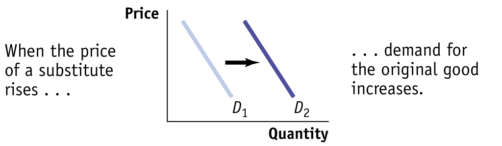
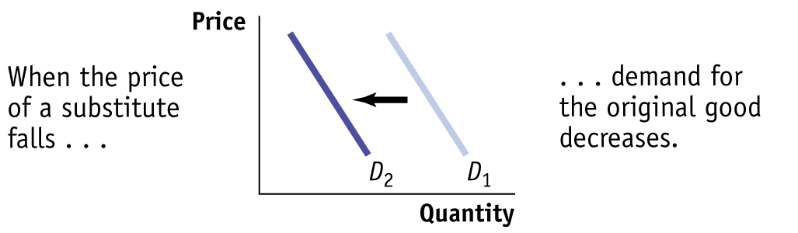
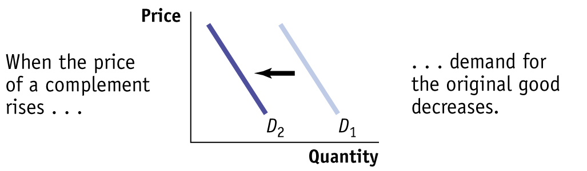
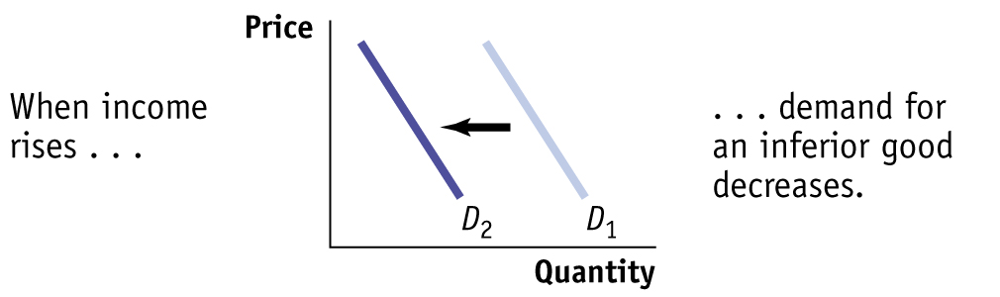
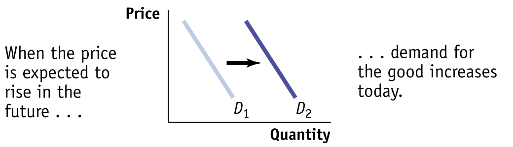
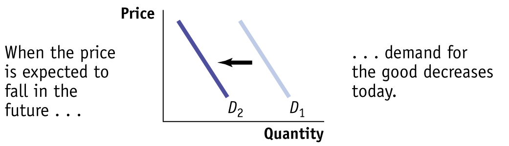

3.2 The Demand Curve
68
How much natural gas will American consumers want to buy in a given year? You might at first think that we can answer this question by adding up the amounts each American household and business consumes in that year. But that’s not enough to answer the question, because how much natural gas Americans want to buy depends upon the price of natural gas.
When the price of natural gas falls, as it did from 2006 to 2015, consumers will generally respond to the lower price by using more natural gas—for example, by turning up their thermostats to keep their houses warmer in the winter or switching to vehicles powered by natural gas. In general, the amount of natural gas, or of any good or service that people want to buy, depends upon the price. The higher the price, the less of the good or service people want to purchase; alternatively, the lower the price, the more they want to purchase.
So the answer to the question “How many units of natural gas do consumers want to buy?” depends on the price of a unit of natural gas. If you don’t yet know what the price will be, you can start by making a table of how many units of natural gas people would want to buy at a number of different prices. Such a table is known as a demand schedule. This, in turn, can be used to draw a demand curve, which is one of the key elements of the supply and demand model.
The Demand Schedule and the Demand Curve
A demand schedule shows how much of a good or service consumers will want to buy at different prices.
A demand schedule is a table showing how much of a good or service consumers will want to buy at different prices. At the right of Figure 3-1, we show a hypothetical demand schedule for natural gas. It’s expressed in BTUs (British thermal units), a commonly used measure of quantity of natural gas. It’s a hypothetical demand schedule—it doesn’t use actual data on American demand for natural gas.
The quantity demanded is the actual amount of a good or service consumers are willing to buy at some specific price.
According to the table, if a BTU of natural gas costs $3, consumers around the world will want to purchase 10 trillion BTUs of natural gas over the course of a year. If the price is $3.25 per BTU, they will want to buy only 8.9 trillion BTUs; if the price is only $2.75 per BTU, they will want to buy 11.5 trillion BTUs. The higher the price, the fewer BTUs of natural gas consumers will want to purchase. So, as the price rises, the quantity demanded of natural gas—the actual amount consumers are willing to buy at some specific price—falls.
 | interactive activity
| interactive activity
A demand curve is a graphical representation of the demand schedule. It shows the relationship between quantity demanded and price.
The graph in Figure 3-1 is a visual representation of the information in the table. (You might want to review the discussion of graphs in economics in the appendix to Chapter 2.) The vertical axis shows the price of a BTU of natural gas and the horizontal axis shows the quantity of natural gas in trillions of BTUs. Each point on the graph corresponds to one of the entries in the table. The curve that connects these points is a demand curve. A demand curve is a graphical representation of the demand schedule, another way of showing the relationship between the quantity demanded and price.
Note that the demand curve shown in Figure 3-1 slopes downward. This reflects the inverse relationship between price and the quantity demanded: a higher price reduces the quantity demanded, and a lower price increases the quantity demanded. We can see this from the demand curve in Figure 3-1. As price falls, we move down the demand curve and quantity demanded increases. And as price increases, we move up the demand curve and quantity demanded falls.
69
The law of demand says that a higher price for a good or service, other things equal, leads people to demand a smaller quantity of that good or service.
In the real world, demand curves almost always do slope downward. (The exceptions are so rare that for practical purposes we can ignore them.) Generally, the proposition that a higher price for a good, other things equal, leads people to demand a smaller quantity of that good is so reliable that economists are willing to call it a “law”—the law of demand.
Shifts of the Demand Curve
Although natural gas prices in 2006 were higher than they had been in 2002, U.S. consumption of natural gas was higher in 2006. How can we reconcile this fact with the law of demand, which says that a higher price reduces the quantity demanded, other things equal?
The answer lies in the crucial phrase other things equal. In this case, other things weren’t equal: the U.S. economy had changed between 2002 and 2006 in ways that increased the amount of natural gas demanded at any given price. For one thing, the U.S. economy was much stronger in 2006 than in 2002. Figure 3-2 illustrates this phenomenon using the demand schedule and demand curve for natural gas. (As before, the numbers in Figure 3-2 are hypothetical.)

70
The table in Figure 3-2 shows two demand schedules. The first is the demand schedule for 2002, the same as shown in Figure 3-1. The second is the demand schedule for 2006. It differs from the 2002 schedule because of the stronger U.S. economy, leading to an increase in the quantity of natural gas demanded at any given price. So at each price the 2006 schedule shows a larger quantity demanded than the 2002 schedule. For example, the quantity of natural gas consumers wanted to buy at a price of $3 per BTU increased from 10 trillion to 12 trillion BTUs per year; the quantity demanded at $3.25 per BTU went from 8.9 trillion to 10.7 trillion, and so on.
GLOBALCOMPARISON
Pay More, Pump Less
For a real-world illustration of the law of demand, consider how gasoline consumption varies according to the prices consumers pay at the pump. Because of high taxes, gasoline and diesel fuel are more than twice as expensive in most European countries and in many East Asian countries than in the United States. According to the law of demand, this should lead Europeans to buy less gasoline than Americans—and they do. As you can see from the figure, per person, Europeans consume less than half as much fuel as Americans, mainly because they drive smaller cars with better mileage.
Prices aren’t the only factor affecting fuel consumption, but they’re probably the main cause of the difference between European and American fuel consumption per person.
Data from: World Development Indicators and U.S. Energy Information Administration, 2013.
A shift of the demand curve is a change in the quantity demanded at any given price, represented by the shift of the original demand curve to a new position, denoted by a new demand curve.
71
What is clear from this example is that the changes that occurred between 2002 and 2006 generated a new demand schedule, one in which the quantity demanded was greater at any given price than in the original demand schedule. The two curves in Figure 3-2 show the same information graphically. As you can see, the demand schedule for 2006 corresponds to a new demand curve, D2, that is to the right of the demand schedule for 2002, D1. This shift of the demand curve shows the change in the quantity demanded at any given price, represented by the change in position of the original demand curve D1 to its new location at D2.
A movement along the demand curve is a change in the quantity demanded of a good arising from a change in the good’s price.
It’s crucial to make the distinction between such shifts of the demand curve and movements along the demand curve, changes in the quantity demanded of a good arising from a change in that good’s price. Figure 3-3 illustrates the difference.
The movement from point A to point B is a movement along the demand curve: the quantity demanded rises due to a fall in price as you move down D1. Here, a fall in the price of natural gas from $3.50 to $3 per BTU generates a rise in the quantity demanded from 8.1 trillion to 10 trillion BTUs per year. But the quantity demanded can also rise when the price is unchanged if there is an increase in demand—a rightward shift of the demand curve. This is illustrated in Figure 3-3 by the shift of the demand curve from D1 to D2. Holding the price constant at $3.50 per BTU, the quantity demanded rises from 8.1 trillion BTUs at point A on D1 to 9.7 trillion BTUs at point C on D2.
When economists say “the demand for X increased” or “the demand for Y decreased,” they mean that the demand curve for X or Y shifted—not that the quantity demanded rose or fell because of a change in the price.
72
PITFALLS
DEMAND VERSUS QUANTITY DEMANDED
When economists say “an increase in demand,” they mean a rightward shift of the demand curve, and when they say “a decrease in demand,” they mean a leftward shift of the demand curve—that is, when they’re being careful. In ordinary speech most people, including professional economists, use the word demand casually. For example, an economist might say “the demand for air travel has doubled over the past 15 years, partly because of falling airfares” when he or she really means that the quantity demanded has doubled.
It’s OK to be a bit sloppy in ordinary conversation. But when you’re doing economic analysis, it’s important to make the distinction between changes in the quantity demanded, which involve movements along a demand curve, and shifts of the demand curve (see Figure 3-3 for an illustration). Sometimes students end up writing something like this: “If demand increases, the price will go up, but that will lead to a fall in demand, which pushes the price down …” and then go around in circles. If you make a clear distinction between changes in demand, which mean shifts of the demand curve, and changes in quantity demanded, which means movement along the demand curve, you can avoid a lot of confusion.
Understanding Shifts of the Demand Curve
Figure 3-4 illustrates the two basic ways in which demand curves can shift. When economists talk about an “increase in demand,” they mean a rightward shift of the demand curve: at any given price, consumers demand a larger quantity of the good or service than before. This is shown by the rightward shift of the original demand curve D1 to D2. And when economists talk about a “decrease in demand,” they mean a leftward shift of the demand curve: at any given price, consumers demand a smaller quantity of the good or service than before. This is shown by the leftward shift of the original demand curve D1 to D3.
What caused the demand curve for natural gas to shift? As we mentioned earlier, the reason was the stronger U.S. economy in 2006 compared to 2002. If you think about it, you can come up with other factors that would be likely to shift the demand curve for natural gas. For example, suppose that the price of heating oil rises. This will induce some consumers, who heat their homes and businesses in winter with heating oil, to switch to natural gas instead, increasing the demand for natural gas.
73
Economists believe that there are five principal factors that shift the demand curve for a good or service:
Changes in the prices of related goods or services
Changes in income
Changes in tastes
Changes in expectations
Changes in the number of consumers
Although this is not an exhaustive list, it contains the five most important factors that can shift demand curves. So when we say that the quantity of a good or service demanded falls as its price rises, other things equal, we are in fact stating that the factors that shift demand are remaining unchanged. Let’s now explore, in more detail, how those factors shift the demand curve.
Two goods are substitutes if a rise in the price of one of the goods leads to an increase in the demand for the other good.
Changes in the Prices of Related Goods or Services Heating oil is what economists call a substitute for natural gas. A pair of goods are substitutes if a rise in the price of one good (heating oil) makes consumers more likely to buy the other good (natural gas). Substitutes are usually goods that in some way serve a similar function: coffee and tea, muffins and doughnuts, train rides and air flights. A rise in the price of the alternative good induces some consumers to purchase the original good instead of it, shifting demand for the original good to the right.
Two goods are complements if a rise in the price of one good leads to a decrease in the demand for the other good.
But sometimes a rise in the price of one good makes consumers less willing to buy another good. Such pairs of goods are known as complements. Complements are usually goods that in some sense are consumed together: computers and software, cappuccinos and cookies, cars and gasoline. Because consumers like to consume a good and its complement together, a change in the price of one of the goods will affect the demand for its complement. In particular, when the price of one good rises, the demand for its complement decreases, shifting the demand curve for the complement to the left. So, for example, when the price of gasoline began to rise in 2009 from under $3 per gallon to close to $4 per gallon in 2011, the demand for gas-guzzling cars fell.
Changes in Income Why did the stronger economy in 2006 lead to an increase in the demand for natural gas compared to the demand during the weak economy of 2002? Because with the stronger economy, Americans had more income, making them more likely to purchase more of most goods and services at any given price. For example, with a higher income you are likely to keep your house warmer in the winter than if your income is low.
And, the demand for natural gas, a major source of fuel for electricity-generating power plants, is tied to the demand for other goods and services. For example, businesses must consume power in order to provide goods and services to households. So when the economy is strong and household incomes are high, businesses will consume more electricity and, indirectly, more natural gas.
When a rise in income increases the demand for a good—the normal case—it is a normal good.
When a rise in income decreases the demand for a good, it is an inferior good.
Why do we say that people are likely to purchase more of “most goods,” not “all goods”? Most goods are normal goods—the demand for them increases when consumer income rises. However, the demand for some products falls when income rises. Goods for which demand decreases when income rises are known as inferior goods. Usually an inferior good is one that is considered less desirable than more expensive alternatives—such as a bus ride versus a taxi ride. When they can afford to, people stop buying an inferior good and switch their consumption to the preferred, more expensive alternative. So when a good is inferior, a rise in income shifts the demand curve to the left. And, not surprisingly, a fall in income shifts the demand curve to the right.
74
One example of the distinction between normal and inferior goods that has drawn considerable attention in the business press is the difference between so-called casual-dining restaurants such as Applebee’s or Olive Garden and fast-food chains such as McDonald’s and KFC. When their incomes rise, Americans tend to eat out more at casual-dining restaurants. However, some of this increased dining out comes at the expense of fast-food venues—to some extent, people visit McDonald’s less once they can afford to move upscale. So casual dining is a normal good, whereas fast-food consumption appears to be an inferior good.
Changes in Tastes Why do people want what they want? Fortunately, we don’t need to answer that question—we just need to acknowledge that people have certain preferences, or tastes, that determine what they choose to consume and that these tastes can change. Economists usually lump together changes in demand due to fads, beliefs, cultural shifts, and so on under the heading of changes in tastes or preferences.
For example, once upon a time men wore hats. Up until around World War II, a respectable man wasn’t fully dressed unless he wore a dignified hat along with his suit. But the returning GIs adopted a more informal style, perhaps due to the rigors of the war. And President Eisenhower, who had been supreme commander of Allied Forces before becoming president, often went hatless. After World War II, it was clear that the demand curve for hats had shifted leftward, reflecting a decrease in the demand for hats.
Economists have relatively little to say about the forces that influence consumers’ tastes. (Although marketers and advertisers have plenty to say about them!) However, a change in tastes has a predictable impact on demand. When tastes change in favor of a good, more people want to buy it at any given price, so the demand curve shifts to the right. When tastes change against a good, fewer people want to buy it at any given price, so the demand curve shifts to the left.
Changes in Expectations When consumers have some choice about when to make a purchase, current demand for a good is often affected by expectations about its future price. For example, savvy shoppers often wait for seasonal sales—say, buying next year’s holiday gifts during the post-holiday markdowns. In this case, expectations of a future drop in price lead to a decrease in demand today. Alternatively, expectations of a future rise in price are likely to cause an increase in demand today.
For example, the fall in gas prices in recent years to around $2 per BTU has spurred more consumers to switch to natural gas from other fuel types than when natural gas fell to $2 per BTU in 2002. But why are consumers more willing to switch now? Because in 2002, consumers didn’t expect the fall in the price of natural gas to last—and they were right.
In 2002, natural gas prices fell because of the weak economy. That situation changed in 2006 when the economy came roaring back and the price of natural gas rose dramatically. In contrast, consumers have come to expect that the more recent fall in the price of natural gas will not be temporary because it is based on a permanent change: the ability to tap much larger deposits of natural gas.
Expected changes in future income can also lead to changes in demand: if you expect your income to rise in the future, you will typically borrow today and increase your demand for certain goods; if you expect your income to fall in the future, you are likely to save today and reduce your demand for some goods.
Changes in the Number of Consumers Another factor that can cause a change in demand is a change in the number of consumers of a good or service. For example, population growth in the United States eventually leads to higher demand for natural gas as more homes and businesses need to be heated in the winter and cooled in the summer.
75
An individual demand curve illustrates the relationship between quantity demanded and price for an individual consumer.
Let’s introduce a new concept: the individual demand curve, which shows the relationship between quantity demanded and price for an individual consumer. For example, suppose that the Gonzalez family is a consumer of natural gas for heating and cooling their home. Panel (a) of Figure 3-5 shows how many BTUs of natural gas they will buy per year at any given price. The Gonzalez family’s individual demand curve is DGonzalez.
The market demand curve shows how the combined quantity demanded by all consumers depends on the market price of the good. (Most of the time when economists refer to the demand curve they mean the market demand curve.) The market demand curve is the horizontal sum of the individual demand curves of all consumers in that market. To see what we mean by the term horizontal sum, assume for a moment that there are only two consumers of natural gas, the Gonzalez family and the Murray family. The Murray family consumes natural gas to fuel their natural gas–powered car. The Murray family’s individual demand curve, DMurray, is shown in panel (b). Panel (c) shows the market demand curve. At any given price, the quantity demanded by the market is the sum of the quantities demanded by the Gonzalez family and the Murray family. For example, at a price of $5 per BTU, the Gonzalez family demands 30 BTUs of natural gas per year and the Murray family demands 20 BTUs per year. So the quantity demanded by the market is 50 BTUs per year, as seen on the market demand curve, DMarket.
Clearly, the quantity demanded by the market at any given price is larger with the Murray family present than it would be if the Gonzalez family were the only consumer. The quantity demanded at any given price would be even larger if we added a third consumer, then a fourth, and so on. So an increase in the number of consumers leads to an increase in demand.
For a review of the factors that shift demand, see Table 3-1.
76
| When this happens … |
… demand increases | But when this happens … |
… demand decreases |
|  |  | ||

|
 | ||

|
|||

|
 | ||

|

|
||
|  |  | ||

|

|
||
ECONOMICSin Action
77
Beating the Traffic
 | interactive activity
| interactive activity
All big cities have traffic problems, and many local authorities try to discourage driving in the crowded city center. If we think of an auto trip to the city center as a good that people consume, we can use the economics of demand to analyze anti-traffic policies.
One common strategy is to reduce the demand for auto trips by lowering the prices of substitutes. Many metropolitan areas subsidize bus and rail service, hoping to lure commuters out of their cars. An alternative is to raise the price of complements: several major U.S. cities impose high taxes on commercial parking garages and impose short time limits on parking meters, both to raise revenue and to discourage people from driving into the city.
A few major cities—including Singapore, London, Oslo, Stockholm, and Milan—have been willing to adopt a direct and politically controversial approach: reducing congestion by raising the price of driving. Under “congestion pricing” (or “congestion charging” in the United Kingdom), a charge is imposed on cars entering the city center during business hours. Drivers buy passes, which are then debited electronically as they drive by monitoring stations. Compliance is monitored with automatic cameras that photograph license plates.
The current daily cost of driving in London ranges from £9 to £12 (about $14 to $19). And drivers who don’t pay and are caught pay a fine of £120 (about $192) for each transgression.
Not surprisingly, studies have shown that after the implementation of congestion pricing, traffic does indeed decrease. In the 1990s, London had some of the worst traffic in Europe. The introduction of its congestion charge in 2003 immediately reduced traffic in the city center by about 15%, with overall traffic falling by 21% between 2002 and 2006. And there has been increased use of substitutes, such as public transportation, bicycles, motorbikes, and ride-sharing. From 2001 to 2011, bike trips in London increased by 79%, and bus usage was up by 30%.
In the United States, the U.S. Department of Transportation has implemented pilot programs to study congestion pricing. For example, in 2012 Los Angeles County imposed a congestion charge on an 11-mile stretch of highway in central Los Angeles. Drivers pay up to $1.40 per mile, the amount depending upon traffic congestion, with a money-back guarantee that their average speed will never drop below 45 miles per hour. While some drivers were understandably annoyed at the charge, others were more philosophical. One driver felt that the toll was a fair price to escape what often turned into a crawling 45-minute drive, saying, “It’s worth it if you’re in a hurry to get home. You got to pay the price. If not, get stuck in traffic.”
Quick Review
The supply and demand model is a model of a competitive market—one in which there are many buyers and sellers of the same good or service.
The demand schedule shows how the quantity demanded changes as the price changes. A demand curve illustrates this relationship.
The law of demand asserts that a higher price reduces the quantity demanded. Thus, demand curves normally slope downward.
An increase in demand leads to a rightward shift of the demand curve: the quantity demanded rises for any given price. A decrease in demand leads to a leftward shift: the quantity demanded falls for any given price. A change in price results in a change in the quantity demanded and a movement along the demand curve.
The five main factors that can shift the demand curve are changes in (1) the price of a related good, such as a substitute or a complement, (2) income, (3) tastes, (4) expectations, and (5) the number of consumers.
The market demand curve is the horizontal sum of the individual demand curves of all consumers in the market.
Check Your Understanding3-1
Question 3.1
1.Explain whether each of the following events represents (i) a shift of the demand curve or (ii) a movement along the demand curve.
A store owner finds that customers are willing to pay more for umbrellas on rainy days.
Answer TBD
When Circus Cruise Lines offered reduced prices for summer cruises in the Caribbean, their number of bookings increased sharply.
Answer TBD
People buy more long-stem roses the week of Valentine’s Day, even though the prices are higher than at other times during the year.
Answer TBD
A sharp rise in the price of gasoline leads many commuters to join carpools in order to reduce their gasoline purchases.
Answer TBD
Solutions appear at back of book.